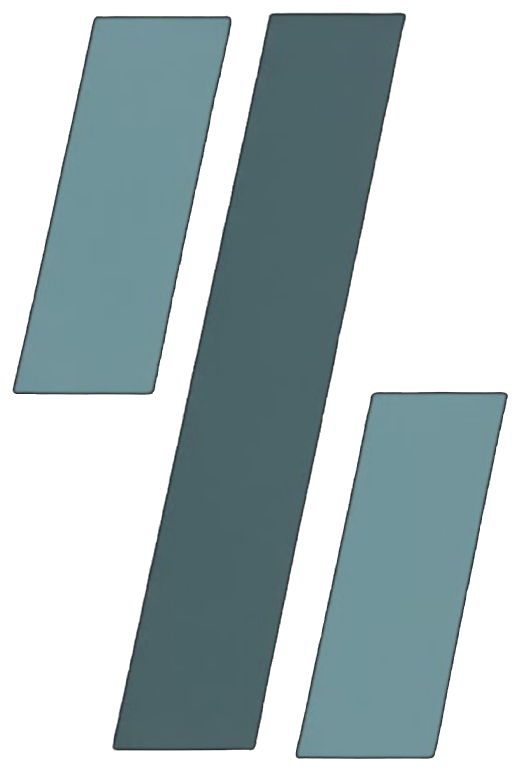

YakınBoğazAI ürün kataloğu — 5 sayfa, tam A4 (210 × 297 mm).
Yazdırırken kenar boşluğu Yok, ölçek %100, arka plan grafikleri açık olsun.
Metin, sayfa kenarından 14 mm içeride durur.

Yakın BoğazTeknoloji ekosistemi
Ürün kataloğu
Kapalı devre
YakınBoğazAI
Kurumsal yapay zekâ ve veri analiz platformu
Verinizi dışarı çıkarmadan
konuşan kurumsal yapay zekâ
Kurum verisini tek akışta toplar, analiz eder ve çalışanların bu veriyle doğal dilde konuşmasını sağlar — tamamen kurumun kendi altyapısında.
YakınBoğazAI · Ürün kataloğu02
01 · Sorun
Kurumlar veri üretiyor, ama bu veriyi kullanamıyor
Bugün her kurum ciddi miktarda veri üretiyor. Bu verinin değeri çok yüksek; ancak çoğu kurumda karar süreçlerine dönüşmüyor.
Operasyon kayıtları
Müşteri ve hasta dosyaları
Ölçüm ve sensör verileri
Raporlar
Prosedürler
Sözleşmeler
Yazışmalar
Veri var, cevap yok. Üç temel engel bu verinin kullanılmasını engelliyor.
01
Veri dağınık ve farklı formatlarda
Bir kısmı veri ambarında, bir kısmı Excel ve CSV dosyalarında, bir kısmı PDF ve Word dokümanlarında, bir kısmı da başka sistemlerin API’lerinde duruyor. Bir soruya cevap bulmak için birkaç sistemi elle taramak gerekiyor.
02
Sayılar tek başına bir şey söylemiyor
Raporlar ortalama, grafik ve tablo gösteriyor; “Bu değer neden yükseldi?”, “Bu normal mi?”, “Önümüzdeki dönem ne bekleyelim?” sorularını cevaplamıyor. Yorum yapacak analist sınırlı, karar gecikiyor.
03
Hazır yapay zekâ servisleri hassas veri için kullanılamıyor
Kişisel veri, ticari sır veya regülasyona tabi bilgi kurum dışındaki bir sunucuya gönderilemez. KVKK, sektör regülasyonları ve güvenlik politikaları buna izin vermez.
02 · Çözüm
YakınBoğazAI bu üç sorunu birlikte çözer
Veri dağınık
Tüm veri tek akışta toplanır ve yapay zekânın anlayacağı biçime dönüştürülür.
Sayılar konuşmuyor
Sayısal analiz otomatik yapılır; sonuçlar doğal dilde yorumlanır.
Bulut yapay zekâ kullanılamıyor
Dil modeli, bilgi tabanı ve analiz motoru kurum içinde, kapalı devre çalışır.
Verinin tek bir satırı biledışarıdaki bir yapay zekâ servisine gönderilmez.
YakınBoğazAI · Ürün kataloğu03
03 · Nasıl çalışır
Birbiriyle konuşan uzman modüller
Her modül tek bir işi üstlenir. Verinin yolculuğu uçtan uca izlenebilir; kurumun mevcut sistemlerini değiştirmesi gerekmez.
01
Veri toplama
Verinin olduğu yere bağlanırız
Kayıtlar bulunduğu yerden alınır. Her kaydın parmak izi tutulur; sonraki eşitlemede yalnız yeni ve değişen kayıtlar işlenir.
Veri ambarı
Klasör izleme
API ve anlık akış
Doğrudan gönderim
Doküman yükleme
02
Dönüştürme
Anlamlı dokümanlara çeviririz
Farklı kaynaklar ortak bir doküman formatına çevrilir. Yapay zekâ satırlara değil, bağlamı olan bilgiye erişir.
Ortak doküman formatı
Özet profil
Dönemsel raporlar
03
Kurumsal bilgi tabanı
Anlamına göre aranır
Dokümanlar parçalanır, kurum içinde çalışan bir modelle vektörlenir ve konu bazlı koleksiyonlarda saklanır. Arama kelime eşleşmesine değil anlama göredir.
Parçalama
Vektörleme
Kurum içi saklama
04
Sayısal analiz
Sayıları konuştururuz
Ölçüm, sensör, satış ve operasyon verisi zaman serisi olarak kaydedilir. Sonuçlar raporlanır ve panelden izlenir.
İstatistik
Zaman serisi
Anomali tespiti
Tahminleme
05
Yapay zekâ ile yorum
Verinizle konuşun
Soru önce bilgi tabanında aranır. Dil modeli kurum verisine dayanarak kaynaklı yanıt üretir; anomali ve tahmini sade dille açıklar.
Bilgi tabanında ara
Kaynaklı yanıt
Kurumun dili
06
Arayüzler
Web ve mobil
Sohbet, analiz, kayıt detayı, doküman yükleme ve izleme web panelinde; aynı işlevler iOS ve Android uygulamasında da vardır.
Panel
Sayısal analiz
Sohbet
Bilgi tabanı
Canlı izleme
07
Güvenlik ve altyapı
Veri egemenliği kurumda
Tüm istekler kimlik doğrulayan API geçidinden geçer. Kurulum konteyner tabanlıdır; kurum sunucusuna veya kuruma ayrılmış ortama kurulur.
Kapalı devre
JWT oturum
HTTPS
Sağlık kontrolü
GPU ile ölçekleme
Kaynaktan çekme, dönüştürme, bilgi tabanına yazma ve vektör veritabanına kayıt aynı akışın parçasıdır. Metin, kayıt ve modeller kurum altyapısında kalır.
YakınBoğazAI · Ürün kataloğu04
04 · Mimari
Tek akış, kurum sınırının içinde
Kaynaklar bağlanır. Toplama, dönüştürme, analiz ve dil modeli aynı altyapıda kalır. Dışarıya yalnız yanıt çıkar.
Veri ambarıTablolar
KlasörJSON · CSV
APICanlı akış
GönderimJSON · CSV
DokümanPDF · Word
Kurum altyapısı · kapalı devre
01Veri toplamaParmak izi tutulur; yalnız yeni ve değişen kayıt işlenir.
02DönüştürmeOrtak doküman, özet profil ve dönemsel rapor.
Metin
03Bilgi tabanıParçala, vektörle, konu koleksiyonunda sakla.
Sayı
04Sayısal analizZaman serisi, anomali ve tahmin.
05Dil modeliBilgi tabanında arar, analizi yorumlar, kaynağını gösterir.
06Arayüzler
Panel
Analiz
Sohbet
iOS
Android
Kurulum
GPU sunucusuDil modeli ve vektörleme
Uygulama sunucusuAPI, paneller ve veritabanları
Tek giriş API geçidinden geçer: JWT oturum, HTTPS, sağlık kontrolü. Veri bu çerçevenin dışına çıkmaz.
YakınBoğazAI · Ürün kataloğu05
05 · Senaryo
Veri ambarından yöneticinin cebine
Bir kurumun veri ambarında on binlerce müşteri, yılları kapsayan işlem ve ölçüm kayıtları; ayrıca yüzlerce sayfa prosedür dokümanı var.
“Son altı ayda değerleri sürekli yükselen müşteriler kimler ve prosedüre göre ne yapmamız gerekiyor?”
01
Bağlan ve dönüştür
Kayıtlar özet profil ve dönemsel raporlara çevrilir; prosedürlerle bilgi tabanına yazılır.
02
Analiz et
Sayısal ölçümler analiz motoruna akar; olağandışı değerler otomatik işaretlenir.
03
Sor
Yönetici, mobil uygulamadan sorusunu sorar.
04
Yanıtla
İlgili kayıt ve prosedür bulunur; dil modeli kaynaklarıyla cevap verir.
05
Güncel kal
Ertesi gün yalnız değişen kayıtlar yeniden işlenir.
Bu süreçte verinin hiçbir parçası kurum dışına çıkmaz.
06 · Sonuç
Tek bilgi kaynağı
Dağınık veri tek akışta toplanır ve anlamına göre aranabilir hâle gelir.
Anlamlandırılmış sayılar
Analiz otomatik yapılır; sonuçlar doğal dilde, saniyeler içinde yorumlanır.
Veri egemenliği
Her şey kurum altyapısında, kapalı devre çalışır; veri dışarı çıkmaz.
YakınBoğazAI, dağınık veriyi tek bir akıllı bilgi kaynağına dönüştürür. Yapay zekânın gücünden vazgeçmeden veri egemenliği kurumda kalır.